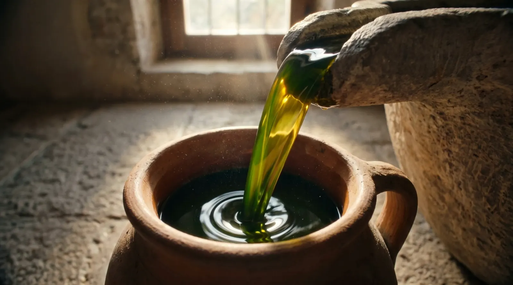
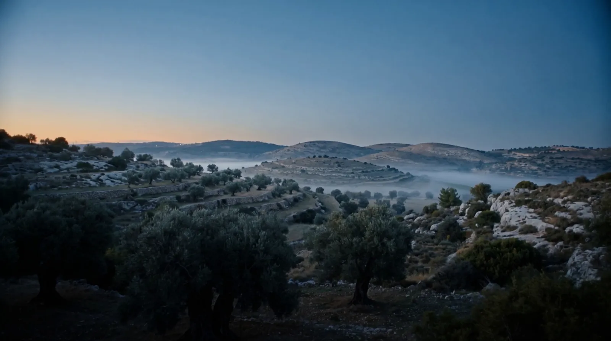
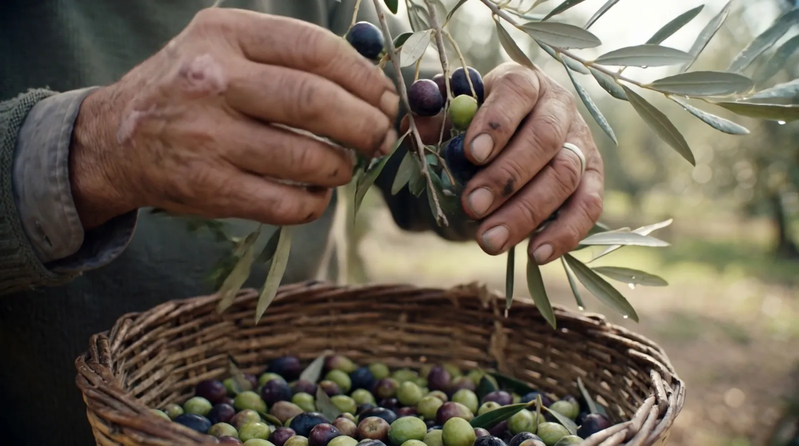
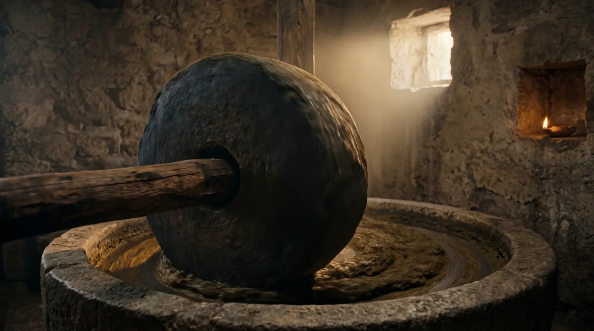
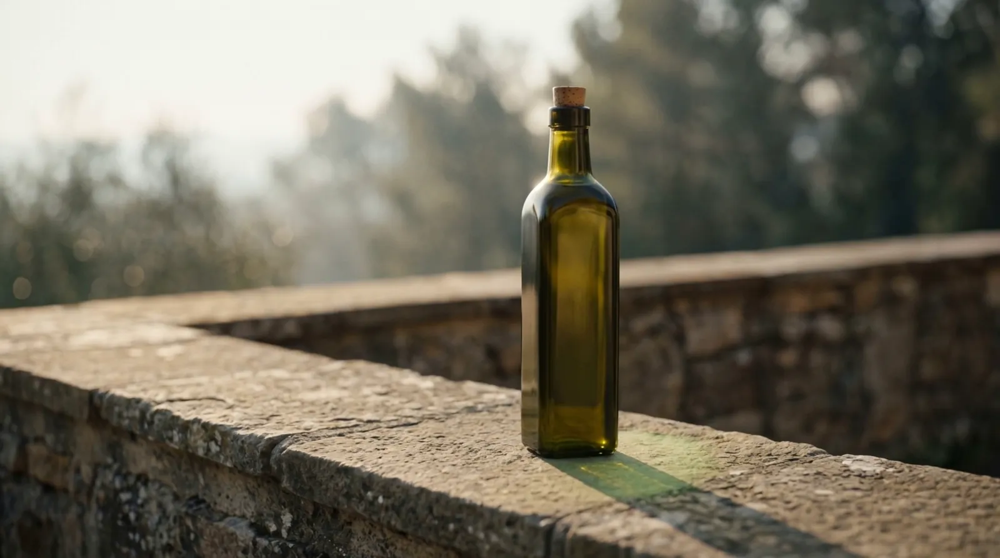
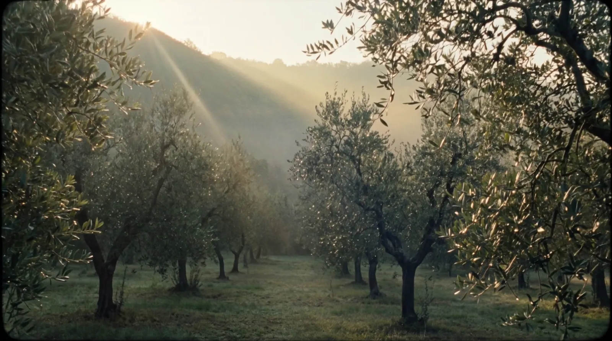
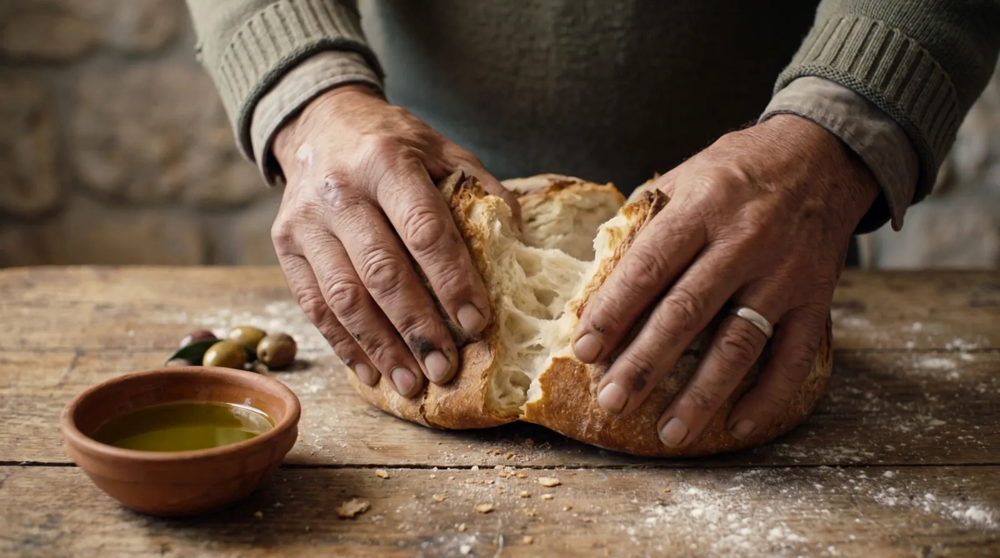
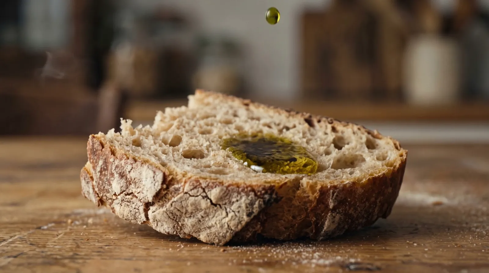
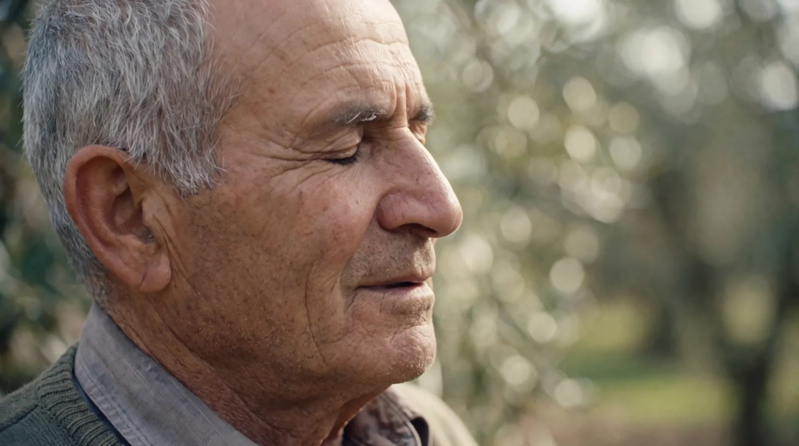

אֶלֶף
אלף שנה בטיפה אחת.
שמן זית כתית מעולה מהגליל העליון. זיתים שנמסקים ביד, נכבשים באותו יום על אבן, ונכנסים לבקבוק כהה. בלי לקצר אף שלב.
לצפייה בסרטהחורשה
העצים האלה ראו הכול.
על הטרסות של הגליל עומדים עצים מפותלים, שורשים בתוך אבן. אנחנו לא ממהרים אותם. רק מגיעים בזמן.

מהעץ לבקבוק
יום אחד, ארבעה שלבים.

המסיק
זית אחרי זית, ביד, אל סל נצרים. רק זיתים שלמים.

אבן הריחיים
הזיתים נטחנים לאט על אבן, בלי חום, כדי שהטעם יישאר.
כבישה אחת
שמן ירוק־זהוב שזורם פעם אחת בלבד. מה שלא יצא, לא נכנס לבקבוק.

זכוכית כהה
הזכוכית שומרת על השמן מהאור, כמו שהאבן שמרה עליו בבית הבד.
הטעם
הטעם
ירוק כמו עשב אחרי גשם, מריר כמו שקד, ועוקצני בסוף הגרון.
- עשב קצור
- עלה עגבנייה
- שקד מר
- פלפל שחור
- סוגכתית מעולה
- זןסורי
- כבישהאחת, קרה
- בקבוק500 מ״ל, זכוכית כהה

הזית מבשיל לאט, בין גשם ראשון לשמש של סתיו. את הסבלנות הזאת טועמים.
הסרט
אלף שנה, בדקה אחת.
על השולחן
לחם חם, מלח גס ושמן. זה כל המתכון.



״יש דברים שאי אפשר למהר.״מתוך הסרט של אֶלֶף